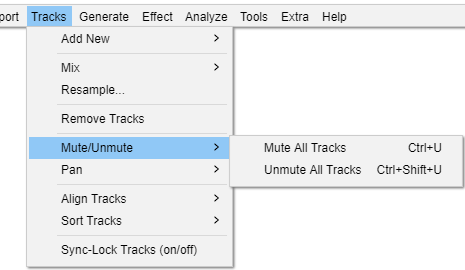

Tracks Menu: Mute/Unmute
From Audacity Development Manual
The Mute/Unmute submenu mutes or unmutes all of the tracks in your project in one go, without having to use the buttons and in each track's Track Control Panel.
- 
Muting
If a track is muted, it cannot be heard in the project and is not exported from it.
| The track mute and solo buttons are usually used to change which tracks are muted, rather than these menu items. |
Mute All Tracks Ctrl + U
Mutes all the audio tracks in the project, as if you had used the buttons from the Track Control Panel on every track.
Unmute All Tracks Ctrl + Shift + U
Unmutes all the audio tracks in the project, as if you had used the buttons from the Track Control Panel on every track.
Mute Tracks Ctrl + U
Mutes all selected audio tracks in the project, as if you had used the buttons from the Track Control Panel on each selected track.
Unmute Tracks Ctrl + Shift + U
Unmutes all selected audio tracks in the project, as if you had used the buttons from the Track Control Panel on each selected track.